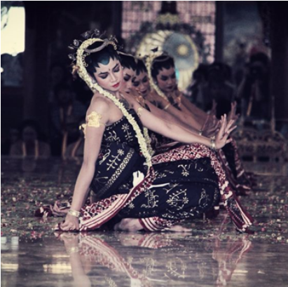
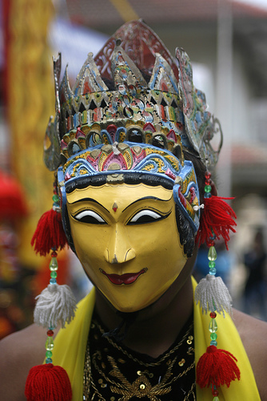

Tari Beskalan
Tari Beskalan merupakan tarian tradisional yang berasal dari Jawa Timur, khususnya Malang. Tarian ini sejak zaman dahulu kala digunakan sebagai tarian untuk menyambut tamu besar atau tamu terhormat dari pihak luar yang datang berkunjung ke Malang untuk suatu keperluan seperti kerjasama, kunjungan biasa, atau keperluan lainnya. Selain untuk menyambut tamu besar, tari Beskalan ini juga digunakan oleh masyarakat untuk pembukaan lahan atau ketika mereka akan mendirikan suatu bangunan. Uniknya, tari Beskalan awalnya dilakukan oleh kaum pria dengan menggunakan pakaian perempuan. Gerakan yang ditonjolkan dari tari ini adalah lincah, cepat, dan serentak. Tari Beskalan ingin membawakan nuansa semangat dengan nuansa feminin didalamnya. Penari tari Beskalan ini dilengkapi dengan aksesoris pakaian tradisional berupa sanggul, bunga melati, cudhuk menthul dan nantinya akan diiringi dengan musik tradisional dengan gamelan. Pada awalnya, tari Beskalan muncul oleh Sukanti, penari yang tiba-tiba tersembuh dari penyakitnya setelah bertemu oleh Proboretno di mimpinya yang sedang mencari kekasihnya. Tari Beskalan digunakan sebagai tarian penghormatan ke leluhur ataupun roh. Namun, seiring berjalannya waktu tari Beskalan mulai digunakan sebagai tarian pembuka acara dan penyambutan tamu. Sebagai pelengkap, penari Beskalan juga dilengkapi dengan genta kecil yang diikat di kaki kanan. Genta kecil ini merupakan simbol dari kesatuan isi dan bentuk, yang berarti bahwa baik sisi dalam maupun luar adalah sama. Ketika penari menghentakan kakinya ke tanah, genta kecil akan berbunyi yang menandakan bahwa akan terjadi perubahan sebentar lagi. Di Malang timur, tari Beskalan menggunakan keris blangkrak yang digunakan oleh laki-laki. Tari Beskalan disini akan menunjukan sisi maskulin yang ditunjukan oleh keris blangkrak dan penampilan fisik gagah sang penari. Disini akan dilakukan tepakan kendang yang akan menambah sisi ketegasan dari tari Beskalan. Dalam hal pembukaan lahan baru, diharapkan tari Beskalan dapat menjadi bentuk penghormatan ke entitas tanah yang telah memberikan berbagai macam manfaat seperti makanan dan minuman. Dalam melakukan tari Beskalan, ada beberapa tahap yang harus dilalui. Tahapan ini harus dilakukan baik untuk keperluan penyambutan tamu maupun ritual tanah. Salah satu tahapan tersebut adalah pemberian tumbal di awal tarian yang biasanya berupa kerbau atau sapi. Ketika itu juga tari Beskalan dimulai dan menggambarkan simbol dari segala kehidupan, seperti Cok Bakal (sesajen). Tumbal tersebut biasanya dilakukan ketika tari Beskalan digunakan untuk ritual penghormatan tanah, namun juga bisa dipakai ketika akan menyambut tamu besar di Malang. Tari Beskalan sampai sekarang masih menjadi tarian yang digunakan oleh masyarakat adat di Malang ketika menerima tamu besar atau pembukaan lahan. Tarian ini haruslah kita lestarikan, karena memiliki makna tinggi akan bersyukur akan rezeki yang telah diberikan.
Tari Bedayan Malang
Tari Bedayan tidak jauh beda dengan Tari Beskalan, dua tarian ini sama-sama menyambut tamu penting. Tari Bedayan memiliki arti “keterbukaan diri dan kesederhanaan”. Tarian ini memiliki tujuan untuk menghormati dan menghargai tamu raja yang datang dalam hubungan bermasyarakat. Tari Bedayan terdiri dari sembilan orang penari yang lemah gemulai dan memang bertemakan sejarah yang panjang.
Kesembilan penari tersebut juga mempunyai nama sendiri-sendiri, yaitu: Batak, Gulu, Dada, Buncit, Endel Weton, Endel, Apit Wingking, Apit Ngajeng, dan Apit Meneng.
Kesembilan penari tersebut seperti bersatu dalam sebuah tubuh yang menghasilkan gerakan gemulai yang penuh dengan makna. Makna yang berarti kota Malang sangat menerima tamu agung tersebut dengan kesederhnaan dan keterbukaan diri.
Tari Grebeg Wiratama
Tari Grebeg Wiratama adalah salah satu tarian tradisional Malang yang memiliki makna jiwa keperwiraan prajurit yang akan berangkat ke medan perang. Gerakan yang ditampilkan dalam tarian ini cenderung bersifat maskulin dan tegas, seperti sifat seorang prajurit. Tak hanya itu, tarian ini juga menggambarkan sifat humoris yang terdapat dalam diri manusia.
Tari Topeng Malangan
Tari Topeng Malangan merupakan tarian tradisional daerah Malang Jawa Timur yang dibawakan oleh beberapa orang dalam satu kelompok seni atau sanggar tari dengan menggunakan topeng dan kostum sesuai tokoh yang dibawakan. Pertunjukan tari topeng malangan ini disebut juga dengan wayang topeng yaitu wayang wong namun bedanya pada tari topeng malangan para penari menggunakan topeng yang terdiri dari banyak karakter yang berbeda. Tari Topeng juga dapat ditampilkan secara “lepas” dari lakon Wayang Topeng menurut perkembanganya. Dalam bentuk lakon biasanya menjadi bagian dari sebuah cerita yang menggambarkan karakter tertentu dalam cerita tersebut. Tari Topeng pada zaman dahulu berfungsi sebagai media komunikasi antara kawulo (rakyat) dan gusti (penguasa). Selain itu, pada masa kekuasaan Raden Wijaya topeng digunakan sebagai media rekonsiliasi antara negara kediri, Singosari dan Majapahit. Namun pada masa sekarang, tari topeng malangan lebih banyak fungsinya pada media hiburan. Dalam pertunjukan Tari Topeng Malangan ini biasanya dibagi menjadi beberapa sesi. Pertama dilakukan Gending giro yaitu iringan musik gamelan yang dilakukan oleh pengrawit untuk menandakan pertunjukan akan dimulai atau memanggil penonton untuk menyaksikan. Kemudian sesi kedua dilakukan salam pembukaan, dalam salam pembuka ini biasanya dilakukan oleh salah satu anggota pertunjukan untuk menyapa penonton dan menceritakan sinopsis cerita yang akan dibawakan. Dan pada bagian ketiga dilakukan sesajen, yaitu ritual yang dilakukan agar pemain dan penonton diberi keselamatan dan pertunjukan berlangsung lancar. Dan yang terakhir adalah inti acara yaitu pertujukan Tari Topeng Malangan.